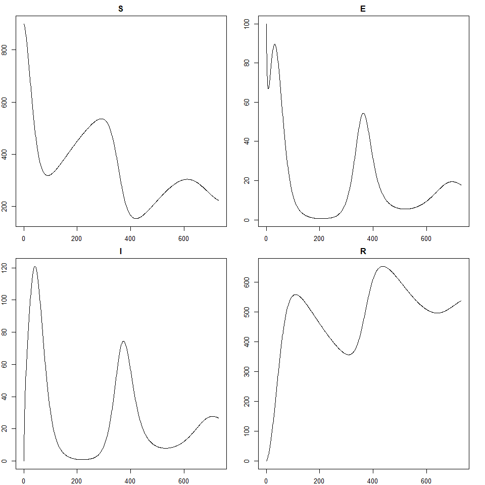

2 Introduction to the model
In this section we introduce the model that we will work with throughout our tutorial.
The model that we chose for demonstration purposes is a deterministic SEIRS model, described by the following differential equations: \[\begin{align} \frac{dS}{dt} &= b N - \frac{\beta(t)IS}{N} + \omega R -\mu S \\ \frac{dE}{dt} &= \frac{\beta(t)IS}{N} - \sigma E - \mu E \\ \frac{dI}{dt} &= \sigma E - \gamma I - (\mu + \alpha) I \\ \frac{dR}{dt} &= \gamma I - \omega R - \mu R \end{align}\] where \(N\) is the total population, varying over time, and the parameters are as follows:
\(b\) is the birth rate,
\(\mu\) is the rate of death from other causes,
\(\beta(t)\) is the infection rate between each infectious and susceptible individual,
\(\sigma\) is the rate of becoming infectious after infection,
\(\alpha\) is the rate of death from the disease,
\(\gamma\) is the recovery rate and
\(\omega\) is the rate at which immunity is lost following recovery.
Figure 2.1: SEIRS Diagram
The rate of infection \(\beta(t)\) is set to be a simple linear function interpolating between points, where the points in question are \(\beta(0)=\beta_1\), \(\beta(100) = \beta(180) = \beta_2\), \(\beta(270) = \beta_3\) and where \(\beta_2 < \beta_1 < \beta_3\). This choice was made to represent an infection rate that initially drops due to external (social) measures and then raises when a more infectious variant appears. Here \(t\) is taken to measure days. Below we show a graph of the infection rate over time when \(\beta_1=0.3, \beta_2=0.1\) and \(\beta_3=0.4\):
Figure 2.2: Infection rate graph
In order to obtain the solution of the differential equations for a given set of parameters, we will use a helper function, ode_results. The function assumes an initial population of 900 susceptible individuals, 100 exposed individuals, and no infectious or recovered individuals. Below we use ode_results with an example set of parameters and plot the model output over time.
example_params <- c(
b = 1/(60*365),
mu = 1/(76*365),
beta1 = 0.2, beta2 = 0.1, beta3 = 0.3,
sigma = 0.13,
alpha = 0.01,
gamma = 0.08,
omega = 0.003
)
solution <- ode_results(example_params)
par(mar = c(2, 2, 2, 2))
plot(solution)
If you would like, familiarise yourself with the model. Investigate how the plots change as you change the values of the parameters.